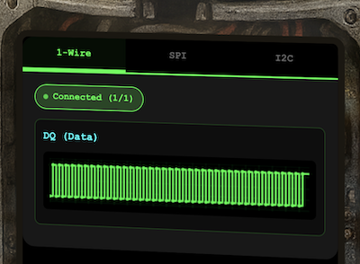
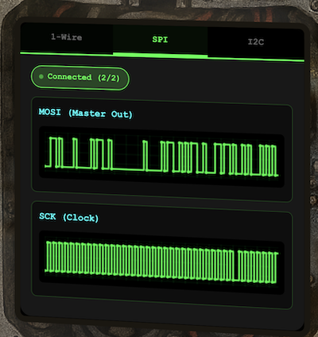
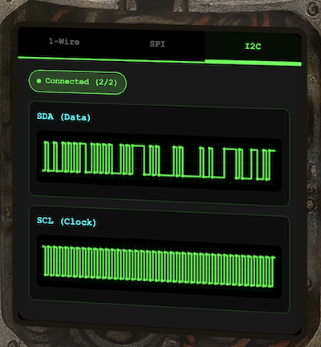
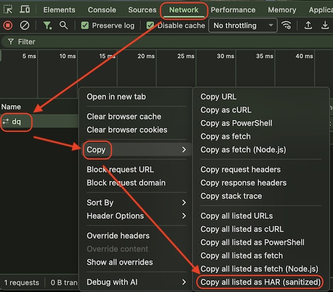

On the Wire
Cheer up little guy, we'll decode those signals right away.
Last year's hardware hacking challenge introduced us to UART. This year, we get three new protocols to learn: 1-Wire, SPI, and I²C.
These, along with UART, are all embedded protocols. UART, I²C, and SPI are considered the "Big Three" fundamental protocols because they're the most common ways microcontrollers communicate with other chips on a circuit board — typically the first protocols anyone learns in embedded systems.
📚 Background: What's an Embedded Protocol? (Click to expand)
They're called "embedded protocols" because they're designed for communication within embedded systems: small, dedicated computers built into devices (microcontrollers in appliances, cars, industrial equipment, IoT devices, etc.).
Contrasting with other protocol types:
| Type | Examples | Typical Use |
|---|---|---|
| Embedded | UART, SPI, I²C, 1-Wire | Chip-to-chip on a board |
| Networking | Ethernet, TCP/IP, WiFi | Device-to-device across networks |
| Peripheral | USB, HDMI, PCIe | Device-to-external-hardware |
At their core, these are low-level protocols that define how to physically generate bits (0s and 1s) through voltage changes on a wire. When hardware hacking, you capture these voltage transitions with a logic analyzer (like a Saleae Logic Pro 8 or an oscilloscope with digital channels), then use protocol decoders to interpret them back into bits, bytes, and meaningful data. The in-browser tool in this challenge simulates what you'd see in something like Saleae's Logic 2 software, where you capture the raw signals and apply protocol decoders to do the heavy lifting.
Video Detailing I2C, SPI, UART
Security researchers use these exact methods to analyze IoT devices, from home routers to security cameras, often finding debug interfaces left exposed on the circuit board. Unfortunately, bad actors use these same techniques to reverse engineer devices, extract firmware, and discover vulnerabilities that they can then exploit remotely over the network. This reconnaissance enables attacks like the Mirai botnet, which hijacked hundreds of thousands of IoT devices to launch massive DDoS attacks."
While still fundamental, 1-Wire is more specialized. It is primarily used for specific parts like Dallas/Maxim temperature sensors or "iButton" keys. It is often learned slightly later because it relies on very precise timing that can be harder to implement by hand than the others.
By analyzing WebSocket data streams from an oscilloscope-style visualization, we decoded timing patterns, applied XOR decryption, and filtered multi-device bus traffic to extract a chained sequence of keys leading to the final answer: a temperature sensor reading.
Let's dive in!
💡 Key Hints
The provided hints were a lot to digest. Here are the main points:
- Identify protocol from wire names (e.g., dq → 1-Wire; mosi/sck → SPI; sda/scl → I²C).
- Connect to a WebSocket endpoint and observe the data format.
- The server continuously broadcasts signal data in a loop - you can connect at any time.
📄 View Full Hints (Click to expand)
Hint 1:
Key concept - Clock vs. Data signals:
- Some protocols have separate clock and data lines (like SPI and I2C)
- For clocked protocols, you need to sample the data line at specific moments defined by the clock
- The clock signal tells you when to read the data signal
For 1-Wire (no separate clock):
- Information is encoded in pulse widths (how long the signal stays low or high)
- Different pulse widths represent different bit values
- Look for patterns in the timing between transitions
For SPI and I2C:
- Identify which line is the clock (SCL for I2C, SCK for SPI)
- Data is typically valid/stable when the clock is in a specific state (high or low)
- You need to detect clock edges (transitions) and sample data at those moments
Technical approach:
- Sort frames by timestamp
- Detect rising edges (0→1) and falling edges (1→0) on the clock line
- Sample the data line's value at each clock edge
Hint 2:
What you're dealing with:
- You have access to WebSocket endpoints that stream digital signal data
- Each endpoint represents a physical wire in a hardware communication system
- The data comes as JSON frames with three properties: line (wire name), t (timestamp), and v (value: 0 or 1)
- The server continuously broadcasts signal data in a loop - you can connect at any time
- This is a multi-stage challenge where solving one stage reveals information needed for the next
Where to start:
- Connect to a WebSocket endpoint and observe the data format
- The server automatically sends data every few seconds - just wait and collect
- Look for documentation on the protocol types mentioned (1-Wire, SPI, I2C)
- Consider that hardware protocols encode information in the timing and sequence of signal transitions, not just the values themselves
- Consider capturing the WebSocket frames to a file so you can work offline
Hint 3:
Stage-by-stage approach
- Connect to the captured wire files or endpoints for the relevant wires.
- Collect all frames for the transmission (buffer until inactivity or loop boundary).
- Identify protocol from wire names (e.g., dq → 1-Wire; mosi/sck → SPI; sda/scl → I²C).
- Decode the raw signal:
- Pulse-width protocols: locate falling→rising transitions and measure low-pulse width.
- Clocked protocols: detect clock edges and sample the data line at the specified sampling phase.
- Assemble bits into bytes taking the correct bit order (LSB vs MSB).
- Convert bytes to text (printable ASCII or hex as appropriate).
- Extract information from the decoded output — it contains the XOR key or other hints for the next stage.
- Stage 1 decoding to recover raw bytes (they will appear random).
- Apply XOR decryption using the key obtained from the previous stage.
- Inspect decrypted output for next-stage keys or target device information.
- Multiple 7-bit device addresses share the same SDA/SCL lines.
- START condition: SDA falls while SCL is high. STOP: SDA rises while SCL is high.
- First byte of a transaction = (7-bit address << 1) | R/W. Extract address with address = first_byte >> 1.
- Identify and decode every device’s transactions; decrypt only the target device’s payload.
- Print bytes in hex and as ASCII (if printable) — hex patterns reveal structure.
- Check printable ASCII range (0x20–0x7E) to spot valid text.
- Verify endianness: swapping LSB/MSB will quickly break readable text.
- For XOR keys, test short candidate keys and look for common English words.
- If you connect mid-broadcast, wait for the next loop or detect a reset/loop marker before decoding.
- Buffering heuristic: treat the stream complete after a short inactivity window (e.g., 500 ms) or after a full broadcast loop.
- Sort frames by timestamp per wire and collapse consecutive identical levels before decoding to align with the physical waveform.
- The raw LSB bits are
01001110. - Since we read backward (LSB-first), we flip it:
01110010. - Converted to Hex: 0x72.
- Converted to ASCII: 'r'.
- Pressure (1013 hPa): Exactly 1 standard atmosphere. This suggests the location is at sea level, or possibly a default simulation value.
- Humidity (45%): A standard, comfortable range for indoor climate control.
- Light (450 lux): Consistent with a moderately lit environment, such as a standard office or lab (typically 300-500 lux).
The Journey
Obtaining and preparing (sanitizing) the data.
The challenge presents us with an oscilloscope animation on the body of a robot. There are three tabs for the three challenges, 1-Wire, SPI, and I²C.



As one of the hints mentions, we look at the WebSockets for the raw data. This can be obtained using your browser's developer tools. See appendices for background info on WebSockets and developer tools.
From the challenge page, open developer tools and reload the page to get data loaded. Then click
on each of the tabs and hold for a few seconds to capture the entire session. In the
Network tab, right click on the WebSocket and select Copy,
Copy all listed as HAR. This saves all the WebSocket data for all three tabs to the
clipboard for pasting into your favorite text editor.

A HAR (HTTP Archive) is a file format used by several HTTP session tools to export the captured data. The data is JSON formatted and can be parsed using Python.
Python script to parse HAR file
Here's the HAR file with the key data extracted looks like:
{
"log": {
"version": "1.2",
"entries": [
{
"_resourceType": "websocket",
"_webSocketMessages": [
{
"type": "receive",
"time": 1766686947.1468308,
"data": "{\"type\":\"welcome\",\"wire\":\"dq\",\"message\":\"Connected to dq wire...\"}"
},
{
"type": "receive",
"time": 1766686948.271657,
"data": "{\"line\":\"dq\",\"t\":0,\"v\":1,\"marker\":\"idle\"}"
},
{
"type": "receive",
"time": 1766686948.27245,
"data": "{\"line\":\"dq\",\"t\":1,\"v\":0,\"marker\":\"reset\"}"
},
{
"type": "receive",
"time": 1766686948.2726688,
"data": "{\"line\":\"dq\",\"t\":481,\"v\":1}"
}
// ... thousands of more messages ...import json
import sys
# Usage: python3 parse_har.py <file.har> [line_name]
if len(sys.argv) < 2:
print("Usage: python3 parse_har.py <file.har> [line_name]")
sys.exit(1)
file_path = sys.argv[1]
target_line = sys.argv[2] if len(sys.argv) > 2 else "dq"
try:
with open(file_path, 'r') as f:
har_data = json.load(f)
# 1. Collect all WebSocket messages
entries = har_data.get('log', {}).get('entries', [])
ws_messages = []
for entry in entries:
if entry.get('_resourceType') == 'websocket':
ws_messages.extend(entry.get('_webSocketMessages', []))
if not ws_messages:
print("Error: No WebSocket data found.")
sys.exit(1)
# 2. Store unique data points
# Using a dictionary keyed by 't' automatically removes duplicates
# if the signal loops around.
unique_data = {}
for msg in ws_messages:
try:
payload = json.loads(msg.get('data'))
# Filter by line name
if payload.get('line') != target_line:
continue
if 't' in payload and 'v' in payload:
t = int(payload['t'])
v = int(payload['v'])
marker = payload.get('marker', '')
# Store it. If 't' repeats, we just overwrite (deduplicate)
unique_data[t] = (v, marker)
except (json.JSONDecodeError, TypeError, ValueError):
continue
# 3. Sort and Print
# This reconstructs the correct order (0 -> End) even if
# the capture started in the middle.
sorted_timestamps = sorted(unique_data.keys())
if not sorted_timestamps:
print(f"No data found for line: {target_line}")
sys.exit(1)
for t in sorted_timestamps:
v, marker = unique_data[t]
print(f"{t},{v},{marker}")
except FileNotFoundError:
print(f"Error: File '{file_path}' not found.")
Here's what the beginning and end of the 1-wire (dq) data looks like. It shows the time and value of each signal change:
% python3 parse_har.py onthewire.har dq > onthewire.dq.har.parsed % head -5 onthewire.dq.har.parsed 0,1,idle 1,0,reset 481,1, 551,0,presence 701,1, % tail -3 onthewire.dq.har.parsed 32791,0, 32851,1, 32871,1,stop
🔀 Alternate Step - Collect WebSocket Data from Burp Suite
While using Burp Suite as your proxy, you can capture WebSocket messages after sending a WebSocket to the Repeater. Select one message from the history, then select all by using control A or Command A. Then copy and then paste into your favorite text editor. The data here will be in a slightly different format than the HAR file.

1-Wire
1-Wire Background
1-Wire is a communication protocol developed by Dallas Semiconductor (now Maxim Integrated). It uses a single wire for both data and power, allowing multiple devices to be connected in a network. The protocol is commonly used in temperature sensors, memory devices, and other embedded systems.
The bus idles HIGH, and drops LOW to send data. "The timing is critical: a short low pulse (typically 1–15 microseconds) represents a '1', while a longer low pulse (typically 60–120 microseconds) represents a '0'."
Solving 1-Wire
To determine if a bit is a 1 or 0, measure the duration of the low pulse. If it's less than 30 microseconds, it's a 1; otherwise, it's a 0.
Decoding the Signal: Step-by-Step
Phase 1: Addressing
The first 8 bits decoded to0xCC (Skip ROM).
This is standard protocol overhead, so we will skip the breakdown and focus on the payload data.
Phase 2: Decoding the First Character
Here is the exact breakdown of the next 8 bits. Notice how the duration determines the bit value, and how we fill the byte from "Right to Left" (LSB First). After checking, I found that all the durations were either 6µs (short pulse) or 60µs (long pulse), making it easy to classify them.
| Start (µs) | End (µs) | Duration | Logic Check | Bit | Byte Progress (LSB →) |
|---|---|---|---|---|---|
| 1501 | 1561 | 60 µs | Long (> 30µs) | 0 | 0....... |
| 1571 | 1577 | 6 µs | Short (< 30µs) | 1 | 01...... |
| 1641 | 1701 | 60 µs | Long (> 30µs) | 0 | 010..... |
| 1711 | 1771 | 60 µs | Long (> 30µs) | 0 | 0100.... |
| 1781 | 1787 | 6 µs | Short (< 30µs) | 1 | 01001... |
| 1851 | 1857 | 6 µs | Short (< 30µs) | 1 | 010011.. |
| 1921 | 1927 | 6 µs | Short (< 30µs) | 1 | 0100111. |
| 1991 | 2051 | 60 µs | Long (> 30µs) | 0 | 01001110 |
We can use this logic to build a Python script to automate the decoding process.
📄 Python - decode_1wire.py
import sys
start_time = 0
in_data = False
bit_string = ""
# 1-Wire bit thresholds (in microseconds)
# A '1' bit is a short low pulse (1-15µs)
# A '0' bit is a long low pulse (60-120µs)
# We'll use ~30µs as a clear threshold.
BIT_THRESHOLD = 30
for line in sys.stdin:
try:
# Start decoding after the "presence" marker
if 'presence' in line:
in_data = True
continue
if not in_data:
continue
# Split 'timestamp,level'
parts = line.strip().split(',')
timestamp = int(parts[0])
level = int(parts[1])
if level == 0:
# Falling edge: store the start time
start_time = timestamp
elif level == 1 and start_time > 0:
# Rising edge: calculate duration
duration = timestamp - start_time
# Determine bit based on pulse duration
bit = "1" if duration < BIT_THRESHOLD else "0"
bit_string += bit
# Reset for the next bit
start_time = 0
except (IndexError, ValueError):
# Ignore malformed lines or markers like "stop"
continue
# --- Bitstream processing ---
decoded_message = ""
print(f"Total bits found: {len(bit_string)}\n")
# Process the bitstring in 8-bit chunks
for i in range(0, len(bit_string), 8):
byte_lsb = bit_string[i:i+8]
# Stop if we have an incomplete byte at the end
if len(byte_lsb) != 8:
print(f"Ignoring trailing incomplete byte: {byte_lsb}")
break
# Reverse the byte (LSB-first to MSB-first)
byte_msb = byte_lsb[::-1]
try:
# Convert binary string to an integer
decimal_value = int(byte_msb, 2)
# Convert integer to an ASCII character
decoded_message += chr(decimal_value)
except ValueError:
decoded_message += "?" # Placeholder for bad byte
except Exception as e:
print(f"Error processing byte {byte_msb}: {e}")
print(decoded_message)% python3 parse_har.py big.txt dq | python3 decode_1wire.py Total bits found: 456 Ìread and decrypt the SPI bus data using the XOR key: icy
SPI
SPI Background
SPI (Serial Peripheral Interface) is a synchronous, full-duplex communication protocol using four
signal lines. Unlike 1-Wire's timing-based encoding, SPI uses a dedicated serial clock
SCK. Data is sampled at each clock pulse, making extraction straightforward once
you identify the sample points. MOSI (Master Out Slave In) is the dedicated data
line where the master sends bits to the slave. We need to find where the clock samples data
(marked with "sample"), then read the MOSI value at each of those timestamps.
Solving SPI
Here's what the parsed SCK and MOSI data looks like. The
SCK data shows the clock signal, and the MOSI data shows the data
being transmitted.
% python3 parse_har.py onthewire.har sck | head -5 0,0,idle-low 5000,1,sample 10000,0, 15000,1,sample 20000,0, % python3 parse_har.py onthewire.har mosi | head -5 0,0,data-bit 10000,0,data-bit 20000,0,data-bit 30000,1,data-bit 40000,1,data-bit
Decoding Byte 1: Applying the XOR Key
The table below traces the first 8 bits sampled from the SPI interface.
We apply the first character of our icy key, 'i'
(Binary: 01101001),
using an XOR operation.

| Bit # | Timestamp (SCK) | MOSI Context | Raw Bit (MOSI) | Key Bit ('i') | Final Bit (XOR) |
|---|---|---|---|---|---|
| 0 | 5000 | MOSI @ 0 is 0 | 0 | 0 | 0 |
| 1 | 15000 | MOSI @ 10000 is 0 | 0 | 1 | 1 |
| 2 | 25000 | MOSI @ 20000 is 0 | 0 | 1 | 1 |
| 3 | 35000 | MOSI @ 30000 is 1 | 1 | 0 | 1 |
| 4 | 45000 | MOSI @ 40000 is 1 | 1 | 1 | 0 |
| 5 | 55000 | MOSI @ 50000 is 0 | 0 | 0 | 0 |
| 6 | 65000 | MOSI @ 60000 is 1 | 1 | 0 | 1 |
| 7 | 75000 | MOSI @ 70000 is 1 | 1 | 1 | 0 |
Resulting Binary: 01110010 = Hex: 0x72 =
ASCII: |
'r' | ||||
📄 decode_spi.py
import sys
# --- Configuration ---
BYTE_SIZE = 8
XOR_KEY = "icy"
KEY_BYTES = [ord(c) for c in XOR_KEY]
def load_data(filename):
"""
Reads a file generated by parse_har.py.
Format: timestamp,value,marker
"""
data_points = []
try:
with open(filename, 'r') as f:
for line in f:
parts = line.strip().split(',')
# Ensure we have at least timestamp and value
if len(parts) >= 2:
t = int(parts[0])
v = int(parts[1])
# Handle marker if it exists (index 2), otherwise empty string
marker = parts[2] if len(parts) > 2 else ""
data_points.append({'t': t, 'v': v, 'marker': marker})
except FileNotFoundError:
print(f"Error: File '{filename}' not found.")
sys.exit(1)
except ValueError:
print(f"Error: Could not parse line in '{filename}'. Check format.")
sys.exit(1)
return data_points
def main():
# Usage check
if len(sys.argv) < 3:
print(f"Usage: python3 {sys.argv[0]} ")
print("Example: python3 decode_spi.py sck.csv mosi.csv")
sys.exit(1)
sck_file = sys.argv[1]
mosi_file = sys.argv[2]
sck_data = load_data(sck_file)
mosi_data = load_data(mosi_file)
# 1. Identify Sample Points
# The SCK file has explicit "marker": "sample" entries
sample_times = [d['t'] for d in sck_data if 'sample' in d['marker']]
if not sample_times:
print("Error: No 'sample' markers found in SCK file.")
sys.exit(1)
# 2. Build MOSI State Map
# We create a dictionary of {timestamp: value} for fast lookups
# We also sort the keys to help us find the 'state at time X'
mosi_map = {d['t']: d['v'] for d in mosi_data}
mosi_timestamps = sorted(mosi_map.keys())
# 3. Decode Bits
bit_string = ""
# Iterate through every sample point (SCK rising edge)
for sample_t in sample_times:
current_bit = 0 # Default to 0
# Find the state of MOSI at this exact time.
# We look backwards from the sample time to find the most recent MOSI update.
for t in reversed(mosi_timestamps):
if t <= sample_t:
current_bit = mosi_map[t]
break
bit_string += str(current_bit)
# 4. Convert to Bytes
ciphertext_bytes = []
for i in range(0, len(bit_string), BYTE_SIZE):
byte_bits = bit_string[i:i+BYTE_SIZE]
# Skip incomplete bytes at the end
if len(byte_bits) == BYTE_SIZE:
val = int(byte_bits, 2)
ciphertext_bytes.append(val)
# 5. XOR Decrypt
decrypted_message = ""
key_length = len(KEY_BYTES)
for i, cipher_byte in enumerate(ciphertext_bytes):
key_byte = KEY_BYTES[i % key_length]
decrypted_char = chr(cipher_byte ^ key_byte)
decrypted_message += decrypted_char
print(decrypted_message)
if __name__ == "__main__":
main()
We run the parser to extract the SPI clock and data lines from the HAR file. The decoder uses the timing information to reconstruct the SPI communication and then decrypts the data using the XOR key: icy. The resultant message gives us information for the last step in the challenge.
% python3 parse_har.py onthewire.har sck > sck.csv % python3 parse_har.py onthewire.har mosi > mosi.csv % python3 decode_spi.py sck.csv mosi.csv read and decrypt the I2C bus data using the XOR key: bananza. the temperature sensor address is 0x3C
I²C
I²C Background
I²C (Inter-Integrated Circuit) is a multi-master, multi-slave bus using just two lines: SDA (data) and SCL (clock). Unlike SPI's dedicated chip-select lines, I²C uses 7-bit addresses to identify devices. Each transaction begins with a START condition and includes address, read/write bit, acknowledgments, and data bytes.
Solving I²C
Here's what the parsed SDA and SCL data looks like. The
SCL identifies the 'sample' timestamps (the rising edges of the clock) which tell
us when the receiving device reads the data bus. The SDA records the binary state
of the data line (0 or 1) and highlights special protocol events, such as the 'start' condition
at 2000µs where the data line is pulled low to initiate the transaction.
% python3 parse_har.py onthewire.har scl | head -7 0,1,bus-idle 4000,0,clock-low 9000,1,address-sample 14000,0,address-hold 19000,1,address-sample 24000,0,address-hold 29000,1,address-sample % python3 parse_har.py onthewire.har sda | head -7 0,1,bus-idle 2000,0,start 4000,1,address-bit 14000,0,address-bit 24000,0,address-bit 34000,1,address-bit 44000,0,address-bit
The plot below shows the I2C SDA and SCL signals over time. The dotted lines show the sample points where the data is read just after it rises from low to high. The bits in blue are the data bits read at each sample point.

We code this logic in a Python script to parse the I2C signals and reconstruct the transactions.
📄 solve_i2c.py
import sys
# ------------------------------------------------------------------
# PARSER MODIFICATION FOR parse_har.py OUTPUT
# ------------------------------------------------------------------
def parse_i2c_transactions(sda_file, scl_file):
"""
Parses I2C data from CSV files generated by parse_har.py.
Format expected: timestamp,value,label
"""
# Helper to load the CSV format
def load_events(filename, source_name):
events = []
try:
with open(filename, 'r') as f:
for line in f:
parts = line.strip().split(',')
if len(parts) >= 3:
events.append({
't': int(parts[0]),
'v': int(parts[1]),
'label': parts[2],
'src': source_name
})
except FileNotFoundError:
print(f"Error: File {filename} not found.")
sys.exit(1)
return events
sda_events = load_events(sda_file, 'sda')
scl_events = load_events(scl_file, 'scl')
# Merge and sort all events by timestamp to replay the timeline
all_events = sorted(sda_events + scl_events, key=lambda x: x['t'])
transactions = []
# State Machine Variables
current_trans_bytes = [] # List of (type, value) tuples
current_byte_val = 0
bit_count = 0
is_address_phase = True # The first byte after a start is always address
current_sda_val = 1 # Bus idles High
# Iterate through the timeline
for e in all_events:
# --- SDA EVENT: Update State / Detect Start ---
if e['src'] == 'sda':
current_sda_val = e['v']
# Detect START condition (or Repeated Start)
# parse_har.py usually explicitly labels this "start"
if 'start' in e['label']:
# If we were in the middle of a transaction, save it
if current_trans_bytes:
transactions.append({
'index': len(transactions),
'bytes': current_trans_bytes
})
# Reset for new transaction
current_trans_bytes = []
current_byte_val = 0
bit_count = 0
is_address_phase = True
# --- SCL EVENT: Sample Data ---
elif e['src'] == 'scl':
# We only care when the clock is HIGH (Sample time)
if 'sample' in e['label']:
bit_count += 1
# Bits 1-8 are data
if bit_count <= 8:
current_byte_val = (current_byte_val << 1) | current_sda_val
# Bit 9 is ACK/NACK
elif bit_count == 9:
# Byte is complete, store it
byte_type = 'address' if is_address_phase else 'data'
current_trans_bytes.append((byte_type, current_byte_val))
# Reset bit counters
current_byte_val = 0
bit_count = 0
is_address_phase = False # Everything after first byte is data
# Save the final transaction if exists
if current_trans_bytes:
transactions.append({
'index': len(transactions),
'bytes': current_trans_bytes
})
print(f"Parsed {len(transactions)} transactions.")
return transactions
def xor_decrypt(data_bytes, key):
"""XOR decrypt data with repeating key"""
key_bytes = key.encode('ascii')
decrypted = []
for i, byte in enumerate(data_bytes):
key_byte = key_bytes[i % len(key_bytes)]
decrypted.append(byte ^ key_byte)
return bytes(decrypted)
# ------------------------------------------------------------------
# MAIN EXECUTION
# ------------------------------------------------------------------
# Ensure filenames match your actual output files from parse_har.py
SDA_FILE = 'sda.csv'
SCL_FILE = 'scl.csv'
transactions = parse_i2c_transactions(SDA_FILE, SCL_FILE)
print("\n" + "="*70)
print("ANALYZING ALL TRANSACTIONS")
print("="*70)
target_address = 0x3C # Likely target for OLED screens or specific sensors
xor_key = "bananza"
for trans in transactions:
bytes_data = trans['bytes']
trans_idx = trans['index']
if not bytes_data:
continue
# First byte is the address
# In I2C, address is top 7 bits, bottom bit is R/W
address_byte = bytes_data[0][1]
address = address_byte >> 1
rw_bit = address_byte & 0x01
# Extract data bytes (skip address)
data_bytes = [b for t, b in bytes_data if t == 'data']
# Only print if there is data or it matches our target
if address == target_address or data_bytes:
print(f"\nTransaction {trans_idx}:")
print(f" Address: 0x{address:02X} ({'READ' if rw_bit else 'WRITE'})")
if data_bytes:
print(f" Data bytes: {' '.join(f'{b:02X}' for b in data_bytes)}")
# Check if this is the target sensor
if address == target_address:
print(f" *** TARGET DETECTED ***")
decrypted = xor_decrypt(data_bytes, xor_key)
print(f" Decrypted: {decrypted.decode('ascii', errors='replace')}")
print("\n" + "="*70)
print("CONCATENATING TARGET SENSOR DATA")
print("="*70)
# Collect all data strictly from the target address
all_target_data = []
for trans in transactions:
if not trans['bytes']: continue
addr = trans['bytes'][0][1] >> 1
if addr == target_address:
# Get only the data payload
payload = [b for t, b in trans['bytes'] if t == 'data']
all_target_data.extend(payload)
if all_target_data:
print(f"Found {len(all_target_data)} total bytes from device 0x{target_address:02X}")
full_decrypted = xor_decrypt(all_target_data, xor_key)
print("\nFULL MESSAGE:")
print(full_decrypted.decode('ascii', errors='replace'))
else:
print(f"No data found for address 0x{target_address:02X}")Running the parser extracts the SDA and SCL lines into CSV files. The decoder processes these files to reconstruct the I2C transactions, decrypting the data from the target sensor at address 0x3C using the XOR key: bananza. The final decrypted message reveals the temperature reading from the sensor which is the flag for this challenge.
% python3 parse_har.py onthewire.har sda > sda.csv % python3 parse_har.py onthewire.har scl > scl.csv % python3 solve_i2c.py Parsed 4 transactions. ====================================================================== ANALYZING ALL TRANSACTIONS ====================================================================== Transaction 0: Address: 0x48 (WRITE) Data bytes: 56 54 4B Transaction 1: Address: 0x3C (WRITE) Data bytes: 51 53 40 59 5A *** TARGET DETECTED *** Decrypted: 32.84 Transaction 2: Address: 0x51 (WRITE) Data bytes: 53 51 5F 52 4E 12 31 03 Transaction 3: Address: 0x29 (WRITE) Data bytes: 56 54 5E 41 02 0F 19 ====================================================================== CONCATENATING TARGET SENSOR DATA ====================================================================== Found 5 total bytes from device 0x3C FULL MESSAGE: 32.84
Other Sensors Decrypted
I found that the other sensors' data could be decrypted similarly using the same
bananza XOR key:
Here are some educated interpretations of the sensor readings:
Appendices
Appendix 1: Challenge Descriptions
Classic Mode Description
Help Evan next to city hall hack this gnome and retrieve the temperature value reported by the I²C device at address 0x3C.The temperature data is XOR-encrypted, so you’ll need to work through each communication stage to uncover the necessary keys. Start with the unencrypted data being transmitted over the 1-wire protocol.
CTF Mode Description
So here's the deal - there are some seriously bizarre signals floating around this area. Not your typical radio chatter or WiFi noise, but something... different. I've been trying to make sense of the patterns, but it's like trying to build a robot hand out of a coffee maker - you need the right approach. Think you can help me decode whatever weirdness is being transmitted out there?
Appendix 2: 📚 Background Info - WebSocket
WebSocket is a computer communications protocol, providing a bidirectional communication channel over a single Transmission Control Protocol (TCP) connection. The WebSocket protocol enables full-duplex interaction between a web browser and a web server with low overhead, facilitating real-time data transfer from and to the server. This is achieved by providing a standardized way for the server to send content to the client without being first requested by the client, and allowing messages to be exchanged while keeping the connection open.
Appendix 3: 📚 Background Info - Developer Tools
Browser developer
tools are a suite of tools built into modern web browsers. They help in debugging
and analyzing web pages and applications. Shortcuts: F12;
Ctrl + Shift + I; Cmd + Option + I;
right click-Inspect.